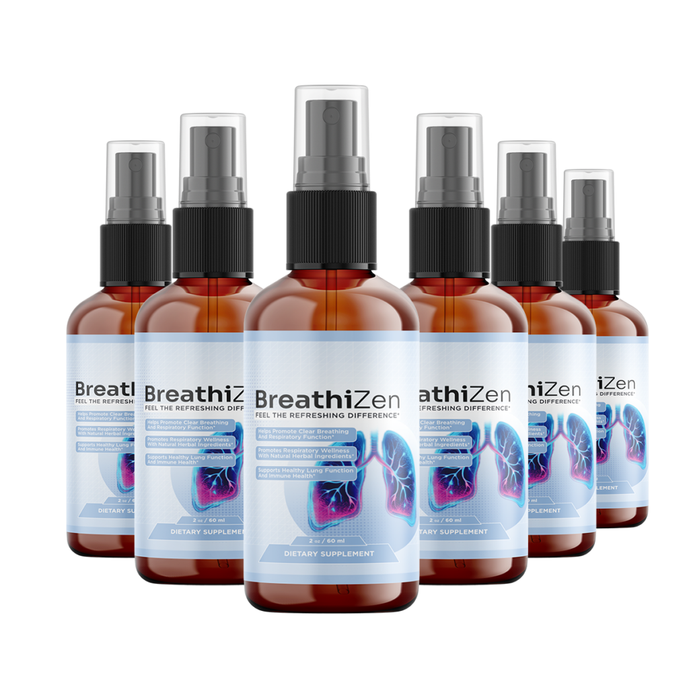
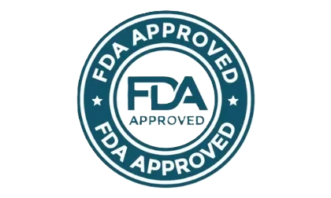
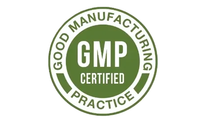
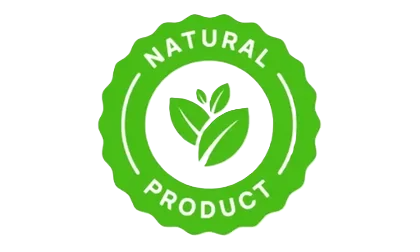
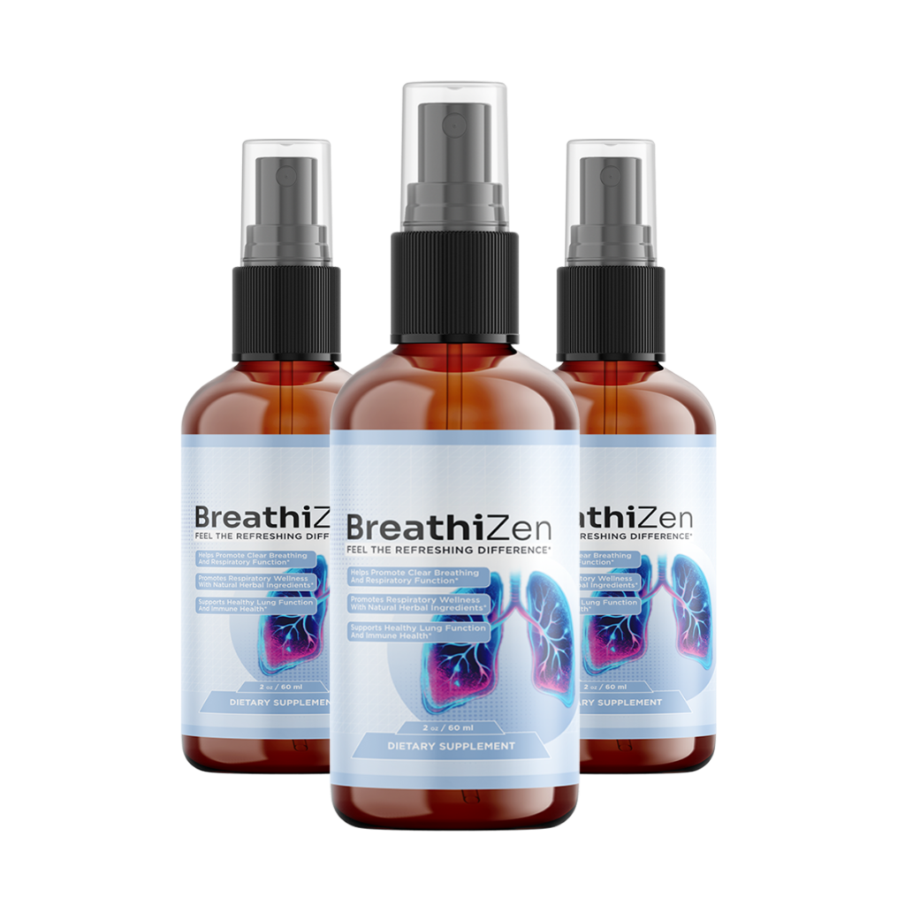
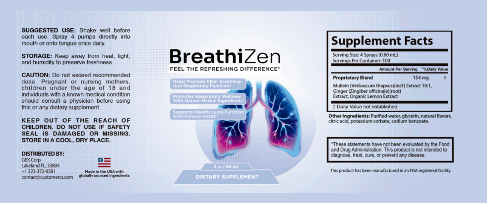
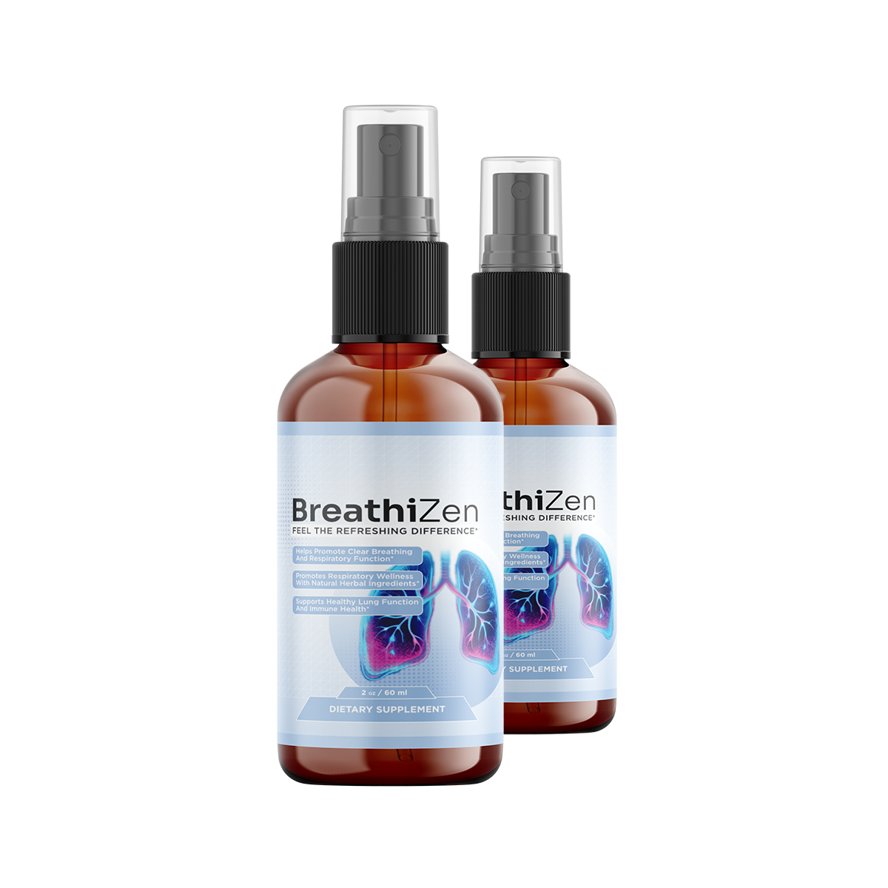

BreathiZen™: Natural Lung Support for Clear Breathing & Respiratory Health
A convenient, plant-based oral spray combining Mullein Leaf, Ginger Root, Bromelain, Organic Lemon & Cordyceps. Designed to promote clear airways, support healthy lung function, and enhance natural immune defenses through fast oral absorption — no pills to swallow, no water needed.
BreathiZen is a natural, once-daily oral spray formulated to support respiratory wellness through three pathways: airway soothing & mucus clearance, anti-inflammatory respiratory support, and immune defense enhancement. Pricing runs $49–$69 per bottle, multi-bottle orders include 5 free digital wellness guides, and every order is covered by a 60-day money-back guarantee.
60-day money-back guarantee Free US shipping on 3 & 6-packs 5 Free Bonus Guides Secure official checkout

Made In The USA

FDA-Registered Facility

GMP Certified

100% Plant-Based
Is BreathiZen Actually Right For You?
Check the boxes below that sound like your typical week. Be honest — nobody else is looking at your screen.
If you checked 2 or more boxes: Your respiratory system is likely missing the foundational herbal support it needs for clear airways, healthy mucus balance, and immune defense. The 6-bottle bundle is designed specifically to address this over a 100-to-600 day window with consistent daily use.
See The 6-Bottle BundleWho Is BreathiZen™ Designed For?
BreathiZen was specifically formulated for adults who want to take a proactive, natural approach to their respiratory wellness without relying on harsh stimulants or complicated routines.
Everyday Breathlessness
If stairs, yard work, or a brisk walk that used to feel effortless now feels like more work than it should, BreathiZen supports your lung capacity naturally with Cordyceps and Mullein.
Daily Environmental Exposure
Years of city air, seasonal allergens, or a former smoking habit make daily respiratory support essential for maintaining clear, comfortable airways.
Seeking a Simple Routine
One quick spray, 4 pumps daily, is far easier to stick with than steam treatments, messy powders, or complicated multi-step regimens. See how it works →
Active Adults Over 40
As we age, lung capacity naturally decreases. BreathiZen provides the herbal nutrition your respiratory system needs to stay resilient and responsive.
Seasonal Allergy Sufferers
If pollen, dust, or weather changes trigger congestion and breathing discomfort, the anti-inflammatory properties of Ginger and Bromelain can help.
Who Should NOT Use It
BreathiZen is not for children under 18, pregnant or nursing women, or anyone with known allergies to the listed ingredients. See full FAQ →
What Is BreathiZen™?
BreathiZen is a natural respiratory support spray formulated with five herbal ingredients in a concentrated blend. Rather than relying on synthetic chemicals or harsh stimulants, it uses centuries-old botanical wisdom combined with modern extraction methods to deliver fast-acting respiratory support.
The key innovation is the oral spray format. Unlike capsules that must survive stomach acid and first-pass liver metabolism before reaching your bloodstream, BreathiZen's spray is absorbed through the highly vascularized oral mucosa — the tissue lining your mouth. This means the active compounds in Mullein, Ginger, and Bromelain reach your circulatory system faster and in higher concentrations.
Each 2 oz bottle contains 100 servings (4 pumps per serving), making it a full month of daily respiratory support in a pocket-sized format. No water needed, no pills to swallow — just spray and go.

6 Steps to Clearer Breathing
BreathiZen™ works with your body to support clear breathing, lung health, and overall wellness — naturally. Here's exactly what happens from the moment you spray.
Fast Mucosal Absorption
Easy-to-use spray is quickly absorbed through the oral mucosa — the highly vascularized tissue lining your mouth. This pathway bypasses digestive degradation and first-pass liver metabolism, delivering concentrated herbal compounds directly into the bloodstream within minutes.
Nutrient Delivery to Lungs
Powerful herbal ingredients — Mullein saponins, Ginger gingerols, and Lemon vitamin C — are carried efficiently through the circulatory system to the respiratory tract, where they begin supporting airway tissue and mucus balance.
Soothes & Clears Airways
Mullein Leaf 10:1 Extract provides natural mucilage that coats and soothes irritated respiratory mucous membranes, while its saponins support healthy mucus balance — helping loosen congestion without suppressing your body's natural clearance mechanisms.
Reduces Respiratory Inflammation
Ginger Root Extract delivers active gingerols that provide warming anti-inflammatory support to the respiratory tract — relaxing bronchial passages, supporting comfort against environmental irritants, and enhancing the body's natural defense mechanisms.
Strengthens Immune Defense
Organic Lemon Extract provides a concentrated dose of vitamin C and antioxidants that strengthen your respiratory immune system, while Bromelain's enzymatic action breaks down inflammation-causing proteins for clearer, unobstructed breathing.
Progressive Lung Support
With consistent daily use, Cordyceps Militaris supports cellular oxygenation and respiratory endurance. Over 4-8 weeks, the cumulative effect builds stronger lung function, clearer airways, and lasting respiratory comfort. See the timeline →
Important context: BreathiZen supports normal respiratory function through nutritional means. It is not a rescue inhaler, not a medication, and not intended to treat acute respiratory emergencies. For diagnosed conditions like asthma or COPD, always follow your physician's treatment plan and consult them before adding any supplement.
8 Benefits of Daily Respiratory Support
More than just a supplement. BreathiZen is a comprehensive respiratory support system designed to help you breathe easier, feel lighter, and live more actively every single day.
Instant Respiratory Relief
The fast-absorbing oral spray bypasses the digestive system, delivering soothing herbal compounds directly to your respiratory tract for rapid, noticeable breathing comfort.
Deep Lung Cleansing
Potent Mullein Leaf 10:1 Extract provides concentrated mucilage and saponins that naturally help clear mucus buildup and support healthy, resilient lung tissue.
Enhanced Immune Defense
Organic Lemon Extract delivers a powerful dose of natural Vitamin C and antioxidants, strengthening your body's first line of defense against seasonal environmental threats.
Natural Anti-Inflammatory
Ginger Root Extract contains active gingerols that gently soothe irritated bronchial passages, reducing respiratory discomfort and promoting relaxed, open airways.
Better Sleep Quality
Clearer airways mean less nighttime congestion, fewer breathing interruptions, and deeper, more restorative sleep. Many users report waking up feeling more refreshed.
Exercise Stamina
Cordyceps Militaris supports cellular oxygenation and respiratory endurance, helping you push through workouts, hikes, and daily activities with less breathlessness.
100% Stimulant-Free
A completely plant-based, non-habit-forming formula. No caffeine, no jitters, and no dependency risk — making it perfectly safe for consistent, long-term daily use.
Ultimate Convenience
No pills to swallow, no water needed. The pocket-sized 2oz bottle fits anywhere, giving you 100 servings of instant respiratory support with just 4 quick pumps.

5 Natural Ingredients for Respiratory Health
A focused, clean formula — five traditionally used respiratory herbs and compounds in a concentrated 154mg proprietary blend. No artificial additives. No synthetic fillers. 100% plant-based.
*Always review the current Supplement Facts panel on the product label for the complete ingredient list, serving size, and exact amounts. Formulas may be updated over time.
Mullein Leaf Extract 10:1
An ancient herb used for over 2,000 years in traditional medicine for respiratory support. Mullein provides natural mucilage that coats and soothes irritated airways, while its concentrated saponins (10:1 extract ratio) help loosen mucus accumulated in the lungs. Users report a feeling of lightness in the chest and easier, deeper breathing within the first weeks of consistent use. See research →
Ginger Root Extract
A powerful natural anti-inflammatory containing active gingerols and shogaols that act directly on respiratory tissues. Ginger reduces airway swelling, improves oxygen circulation, and helps eliminate toxins from the lungs. Its warming properties relax bronchial passages and provide comfort against environmental irritants — making each breath feel easier and less restricted.
Bromelain Powder
A proteolytic enzyme extracted from pineapple stems that breaks down inflammation-causing proteins at the molecular level. Bromelain works by dissolving thick, stubborn mucus, reducing nasal and chest congestion, and accelerating the recovery of irritated airways. Clinical research supports its role in reducing sinus inflammation and supporting healthy respiratory function.
Organic Lemon Extract
Rich in natural vitamin C and bioflavonoid antioxidants, organic lemon strengthens the respiratory immune system and protects lung tissue against oxidative damage from pollution, allergens, and free radicals. It helps purify the respiratory pathways and provides a refreshing, clean taste that makes the daily spray experience pleasant rather than medicinal.
Organic Cordyceps Militaris
An adaptogenic mushroom used for centuries in traditional Tibetan and Chinese medicine to increase lung capacity and respiratory endurance. Cordyceps supports cellular oxygenation by enhancing ATP production in mitochondria, improving the body's ability to utilize oxygen efficiently. Users report increased stamina during physical activity and less breathlessness during daily tasks.
Transparency note: BreathiZen uses a 154mg proprietary blend. While all five ingredients are named, individual milligram amounts per ingredient are not disclosed on the label. We recommend photographing the Supplement Facts panel when your bottle arrives and comparing it with the product page you ordered from. More in FAQ →
What to Expect: Your BreathiZen Timeline
BreathiZen works progressively. Here's what most consistent users report over time. Individual experiences vary based on lifestyle, environment, and overall health.
Week 1: Initial Relief
The refreshing spray provides an immediate sensation of respiratory clarity. Herbal compounds begin building in your system. You may notice slightly easier breathing during daily activities and a more pleasant taste in the morning.
Weeks 2-3: Noticeable Changes
Mullein's mucilage and Bromelain's enzymatic action build progressively. Many users report less morning congestion, easier breathing during light exercise, and reduced throat irritation. Sleep quality may begin improving.
Weeks 4-8: Deeper Support
Ginger's anti-inflammatory effects and Cordyceps' oxygenation support become more pronounced. Users often report sustained breathing comfort, better exercise stamina, and feeling "lighter" in the chest throughout the day.
Month 3+: Lasting Wellness
Consistent use over 90+ days allows the full herbal blend to provide maximum cumulative benefit. This is why the 6-bottle package (600 servings) is our most popular choice — it covers a full 6 months of daily support.
Honest expectation: BreathiZen is a nutritional supplement, not a medication. It supports normal respiratory function through herbal nutrition. Results build gradually with consistent use. If you have a diagnosed respiratory condition, continue your prescribed treatment and consult your physician.
BreathiZen vs. Typical Respiratory Supplements
Not every lung-health product is built the same way. Here's how BreathiZen's spray format and herbal blend stack up against typical alternatives.
| Feature | BreathiZen™ (Oral Spray) | Typical Capsule Supplements |
|---|---|---|
| Absorption Speed | ✓ Fast mucosal absorption (minutes) | ✗ Slow digestive breakdown (30-60 min) |
| Convenience | ✓ 4 pumps, no water needed, pocket-sized | ✗ Requires water, easy to forget |
| Key Ingredients | ✓ Mullein, Ginger, Bromelain, Lemon, Cordyceps | Varies (often single-ingredient or synthetic) |
| Servings Per Bottle | ✓ 100 servings (2 oz bottle) | Typically 30-60 capsules |
| Price Per Serving | ✓ From $0.49/serving (6-bottle pack) | Often $1.00-$2.50/serving |
| Plant-Based & Non-Habit Forming | ✓ Yes, 100% stimulant-free | Varies (many contain caffeine) |
| Manufacturing Quality | ✓ USA, FDA-registered, GMP certified | Often overseas, variable standards |
| Free Bonuses | ✓ 5 digital wellness guides ($243 value) | ✗ Rarely offered |
| Money-Back Guarantee | ✓ 60 days, even on empty bottles | ✗ Rarely offered or only 30 days |
Choose Your BreathiZen Package
The biggest savings come with our most popular multi-bottle bundles. The 6-bottle pack is highly recommended for long-term respiratory support — and includes all 5 free bonuses. See bonus details →
2 Bottles
200 Servings · 66-Day Supply

Total: $138 + Shipping
- 200 total servings
- 60-day money-back guarantee
- One-time purchase, no rebill
- 5 Free Bonus Guides included
6 Bottles
600 Servings · 200-Day Supply
Total: $294 · Free US Shipping
- Lowest price per bottle
- Free US shipping
- 600 servings of respiratory support
- 5 Free Wellness Bonus Guides ($243 value)
- 60-day money-back guarantee
3 Bottles
300 Servings · 100-Day Supply
Total: $177 · Free US Shipping
- Free US shipping
- 300 servings for consistent results
- 5 Free Wellness Bonus Guides
- 60-day money-back guarantee
Try BreathiZen Completely Risk-Free
BreathiZen is backed by an unconditional 60-day money-back guarantee. If you are not completely satisfied with your results, the product, or your overall experience, simply contact our support team within 60 days of your purchase for a full refund — no complicated forms, no hassle, and yes, even on empty bottles. No restocking fees. No questions asked. Your respiratory wellness is our top priority.
Order 3 or 6 Bottles & Get 5 FREE Bonuses
Maximize your respiratory wellness journey. When you choose our multi-bottle packages, we'll instantly email you these 5 premium digital guides absolutely free. Total value: $243.
Bonus #1: Accelerated Metabolism
Value: $59 FREE
Discover habits that speed up metabolism, reduce visceral fat, and help you manage blood sugar without drastic diets. Simple strategies that restore lightness to your body and complement your respiratory wellness routine.
Bonus #2: The Memory Masters
Value: $49 FREE
Discover how to transform your sleep into a powerful mental regeneration tool with the 3-step Japanese Nighttime Ritual to restore your memory and focus naturally. Better sleep = better breathing = better cognition.
Bonus #3: Fortifying Vitamins
Value: $47 FREE
A practical guide with natural and accessible recipes that relieve common neuropathy symptoms — such as dry feet, joint pain, and blurred vision. All made with simple ingredients you can find at any grocery store.
Bonus #4: Free Breathing Challenge
Value: $49 FREE
A 10-day plan featuring micro-habits that take less than 5 minutes a day, designed to clear your airways, reduce congestion, and restore your respiratory capacity. Pairs perfectly with your daily BreathiZen routine.
Bonus #5: Personalized Usage Guide
Value: $39 FREE
A simple manual to help you make the most of the spray. Learn the most effective application techniques, the best times to use it, and complementary habits that accelerate your respiratory relief.
Total Bonus Value: $243 → 100% FREE
What 12,400+ Customers Are Saying
Join thousands of satisfied customers who have made BreathiZen part of their daily respiratory wellness routine. Individual experiences vary.
"I've struggled with seasonal congestion for years, and it always made me feel exhausted and foggy. Since I started using BreathiZen about 6 weeks ago, I can actually breathe clearly through my nose again. It's like a weight has been lifted off my chest. By week 3, I noticed I wasn't reaching for tissues every morning. Now at week 6, my entire day feels different — more energy, more focus, just better overall."
"As someone who lives in a city with seasonal air quality issues, BreathiZen has been a game-changer. 4 sprays in the morning, done. No pills, no water, no fuss. My breathing comfort improved significantly by week 3, and by month 2 I was sleeping through the night without waking up congested. The spray format is genius — I keep one at my desk and one by my bed. Excellent value for the 6-bottle pack."
"Solid respiratory support, though it took about 4 weeks before I really noticed a difference — so be patient and consistent. The spray is convenient and tastes pleasant — the lemon flavor is natural, not artificial like other sprays I've tried. I'm a former smoker (quit 3 years ago) and this has helped my lungs feel less 'tight' during my morning walks. The bonus guides were actually useful too, especially the breathing challenge one."
Testimonials reflect individual experiences and opinions. Results are not guaranteed and may vary. These statements have not been evaluated by the FDA.
Published Research Behind The Ingredients
These citations concern research on the individual ingredients, not a clinical trial of the finished BreathiZen formula itself. All links open in a new tab to external, peer-reviewed sources.
-
1. Turkoz E, et al. "Verbascum species: A comprehensive review on their phytochemical constituents, pharmacological activities and potential uses." Phytochemistry Reviews. 2020.
Search on PubMed -
2. Townsend EA, et al. "Effects of ginger on airway inflammation and responsiveness in asthma." American Journal of Respiratory Cell and Molecular Biology. 2013;49(5):710-717.
View on PubMed -
3. Pavan B, et al. "Properties and therapeutic application of bromelain: a review." Biotechnology Research International. 2012;2012:976203.
View on PubMed -
4. Carr AC, Maggini S. "Vitamin C and immune function." Nutrients. 2017;9(11):1211.
View on PubMed -
5. Suen KL, et al. "Cordyceps militaris improves exercise performance and attenuates exercise-induced fatigue." Molecules. 2018;23(12):3253.
View on PubMed -
6. Guo R, et al. "Herbal medicine for respiratory health: A systematic review." Complementary Therapies in Medicine. 2019;46:53-62.
Search on PubMed
Important context: These statements have not been evaluated by the FDA. Consult the full studies for specific clinical dosages and methodologies. The research cited above concerns individual ingredients and their general wellness roles — it does not represent a clinical trial of the finished BreathiZen formula. BreathiZen is not endorsed by, sponsored by, or affiliated with any of the publications referenced above.
Frequently Asked Questions
Straightforward answers to the most common questions about BreathiZen. Can't find what you're looking for? Contact us.
BreathiZen combines herbal extracts, natural enzymes, and botanical compounds scientifically recognized for their direct action in supporting and protecting the airways and lung function. Its formula works on three main fronts: it provides natural anti-inflammatories that reduce airway swelling and irritation, offers enzymes that dissolve mucus accumulated in the lungs, and includes adaptogenic extracts that strengthen respiratory capacity — providing natural support to reduce congestion, shortness of breath, and respiratory discomfort in a 100% natural way. See the full 6-step process →
Yes. BreathiZen is produced in the United States in an FDA-registered, GMP-certified facility. Its formula contains only naturally derived ingredients, without artificial stimulants and without harmful chemical additives. All ingredients are rigorously tested for quality and safety, and no significant side effects have been reported by users. However, if you are pregnant, nursing, under the age of 18, or have a known medical condition (especially if you take medications for asthma, COPD, or high blood pressure), we recommend showing the label to your doctor before starting.
It's very simple: Shake well before each use. Spray 4 pumps (0.60 mL) directly into your mouth or onto your tongue once daily. For best results, we recommend taking it in the morning, preferably before your first meal. This routine allows the herbal extracts and enzymes to work consistently in your respiratory system throughout the day.
Individual results vary. Most customers report noticing initial improvements in breathing comfort within 1-2 weeks of consistent daily use. More significant respiratory support typically builds over 4-8 weeks as the herbal compounds accumulate in your system. This is why we recommend the 3-bottle (100-day) or 6-bottle (200-day) packages for best results. See the full timeline →
BreathiZen contains 5 key ingredients in a 154mg proprietary blend: Mullein Leaf Extract 10:1 (expectorant & soothing), Ginger Root Extract (anti-inflammatory), Bromelain Powder (mucus-dissolving enzyme), Organic Lemon Extract (immune & antioxidant), and Organic Cordyceps Militaris Fruit Extract (lung capacity & stamina). See full ingredient details →
BreathiZen uses a 154mg proprietary blend where all five ingredients are named, but individual milligram amounts per ingredient are not disclosed on the label. We recommend photographing the Supplement Facts panel when your bottle arrives and comparing it with the product page you ordered from. This is a common practice in the supplement industry, though full transparency would be preferable.
If you take prescription medications — especially for asthma, COPD, blood pressure, or blood thinning — consult your healthcare provider before starting BreathiZen or any new supplement. While the ingredients are natural and generally well-tolerated, individual interactions can vary based on your specific medications and health conditions.
BreathiZen is not recommended for: children under 18, pregnant or nursing women, individuals with known allergies to any of the listed ingredients (mullein, ginger, pineapple/bromelain, lemon, or cordyceps), or anyone with a severe respiratory emergency (use your prescribed rescue medication instead). If you have a diagnosed respiratory condition, continue your prescribed treatment and consult your physician before adding BreathiZen.
Not at all! Your purchase is a one-time order with no automatic renewals, hidden fees, or surprise charges. The price you see at checkout is the only price you pay. We believe in complete transparency.
Most of our customers choose the 6-bottle kit — which covers a full 200-day supply, includes free shipping, offers the biggest discount per unit, and comes with all 5 free bonus guides. This time frame is ideal for allowing the ingredients to work consistently in your system, supporting respiratory health and lung comfort in the long term. The longer you use it, the more consistent and lasting the results.
BreathiZen is backed by an unconditional 60-day money-back guarantee. If you are not completely satisfied for any reason, simply contact us at support@breithezen.com within 60 days of your purchase for a full refund. This applies even if your bottles are empty. No restocking fees. No complicated forms. No questions asked.
BreathiZen is proudly manufactured in the United States in an FDA-registered, GMP-certified facility. The formula uses high-quality domestic and internationally sourced ingredients, all rigorously tested for purity, potency, and safety. Every batch undergoes quality control checks before shipping.
Breathe Easy with BreathiZen™
Join over 12,400 satisfied customers who have made BreathiZen part of their daily respiratory wellness routine. Backed by a 60-day, no-questions-asked guarantee and 5 free wellness bonuses.
60-day money-back guarantee Free US shipping on 3 & 6-packs 5 Free Bonus Guides ($243 value) Secure official checkout
Regular: $99/bottle · Today from $49/bottle
Claim Your BreathiZen Discount